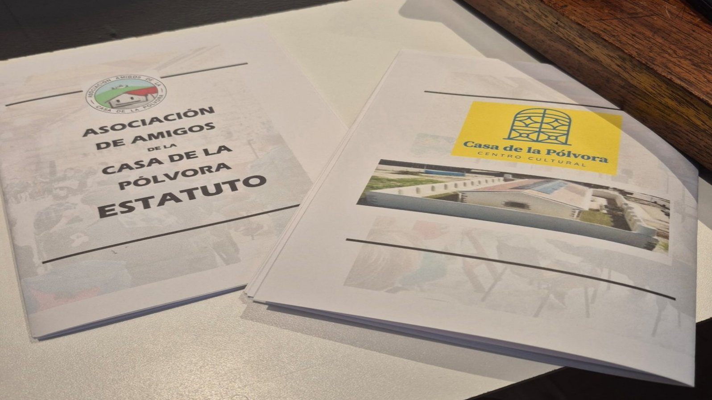

Asociación de Amigos de La Casa de la pólvora, es una organización sin fines de lucro que tiene como objetivo apoyar y promover las actividades culturales y artísticas que se desarrollan en el centro cultural. A través de la colaboración con la comunidad, buscamos fortalecer el vínculo entre los vecinos y vecinas, fomentando la participación activa en la vida cultural del barrio.

El 17 de setiembre de 2024 se realizó la Asamblea Fundacional de la ASOCIACIÓN DE AMIGOS DE LA CASA DE LA PÓLVORA. Más de 80 vecinos y vecinas nos reunimos para fundar una Asociación Civil sin fines de lucro, con el objetivo de apoyar la gestión del Centro Cultural Casa de la Pólvora, contribuir al fortalecimiento de la Cultura y la Memoria de la Villa del Cerro y del Centro Cultural, en particular; articular actividades del Centro Cultural con la comunidad y la sociedad civil organizada y proyectar las actividades de la Casa de la Pólvora a todo público. La gestación de la Asociación de Amigos comenzó con una actividad que llamamos “Tarde de la nostalgia”. El 24 de agosto de 2024 fue la primera edición y se ha mantenido en los años siguientes. En estos casi dos años de existencia, la Asociación de amigos ha realizado diversas actividades en apoyo a la gestión de la Casa de la Pólvora. En algunos casos, apoyando con provisiones para una reunión, organizando un tablado para recaudar fondos (además de brindar un espectáculo gratuito a la comunidad), realizando un censo de quienes asisten a los talleres, presentándose a diversos llamados para conseguir fondos, etc. Quienes deseen integrarse a la Asociación de Amigos, deben solicitarlo mediante un formulario específico, leer y aceptar el Estatuto y estar dispuestos a pagar la cuota social. La integración a la Asociación de Amigos es totalmente independiente de la participación en los talleres o actividades del Centro Cultural. Todas las actividades del Centro Cultural Casa de la Pólvora son gratuitas para los usuarios.